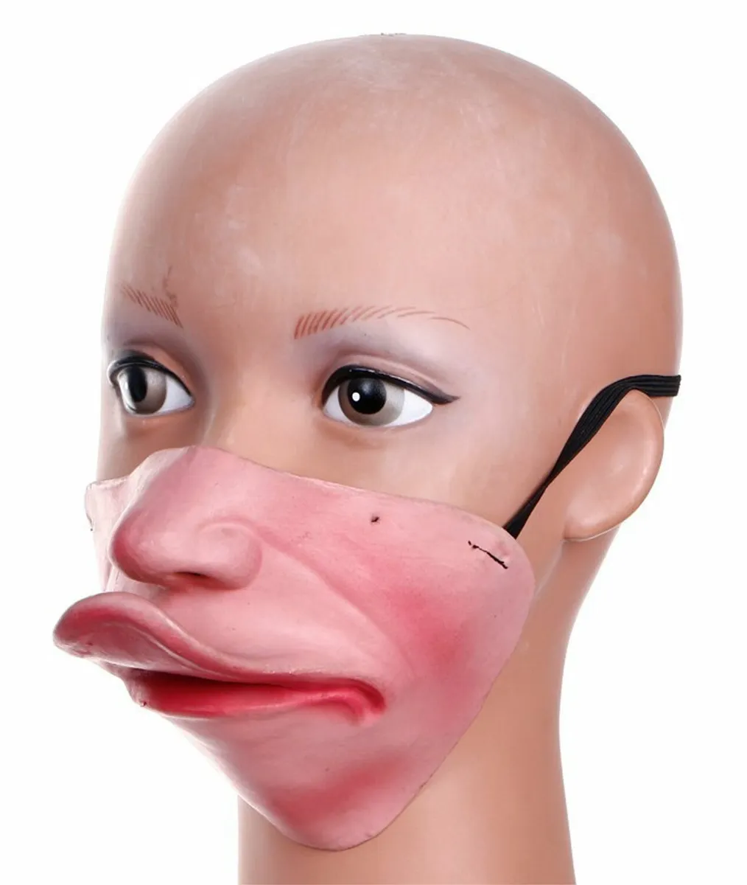

Home
Portfolio
About Me
The Plan
Space Base
My Motivation
It all began one day when I was a young child. Summer break had come and I was ready to take my next step into the world- middle school. What I didn't know was that my life would be irrevocovably changed. This experience was so intense and incredibly horrid that I felt my stomach drop through my body, through the ground, out of China, and defy gravity by shoooting into outer space and beyond the solar system. Goosebumps covered my arms and I did a full body shiver, one that left me flailing so badly that people called an ambulance because they thought I was having a seizure. Upon stopping, I stared blankly into space, the blood vessels in my head burst, causing me to have a stroke. I sagged to the ground in defeat and accepted that my life was over. It had been too much. The ducks had won.
